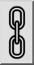

Scales entities by a given factor towards a given center.
Usage
Select the entities you want to scale.
Launch this tool.
Set the center of the scaling with the mouse or enter a coordinate in the
command line.
The scale dialog is displayed where you can enter the scale factor.
If you want to scale with two different factors in X and Y direction,
uncheck the button for proportional scaling:

You can then enter two different scaling factors for X and Y.
If you want to scale the selection by mouse, check the mouse cursor
button:
Click "OK".
If you have previously chosen to scale the selection by mouse,
you now have to specify a reference point and a target point for
the scaling operation.